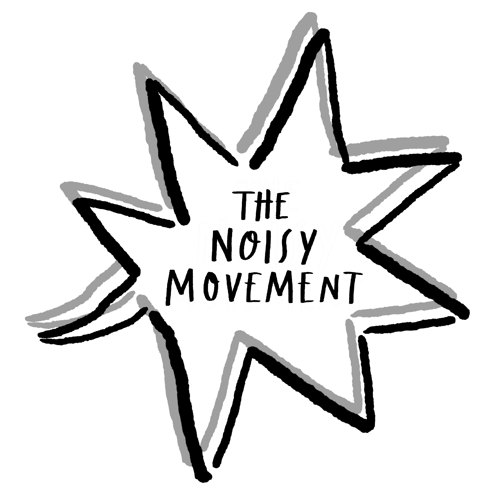

Inspired by the rape trial in Cork, November 2018, where a 17-year
old's lace pants were used by defense as an indication of her consent,
The Noisy Movement was created to make noise about topical issues in
our communities. We are a group of students and friends based in
Edinburgh who aims to raise awareness and funds for groups in society
that need our support. We are currently running two activist campaigns:
ThisIsNotConsent & MindTheNoise.
TNM is a student-led nonprofit social enterprise that aims to make noise
and raise awareness for important causes that support vulnerable groups
of our society.